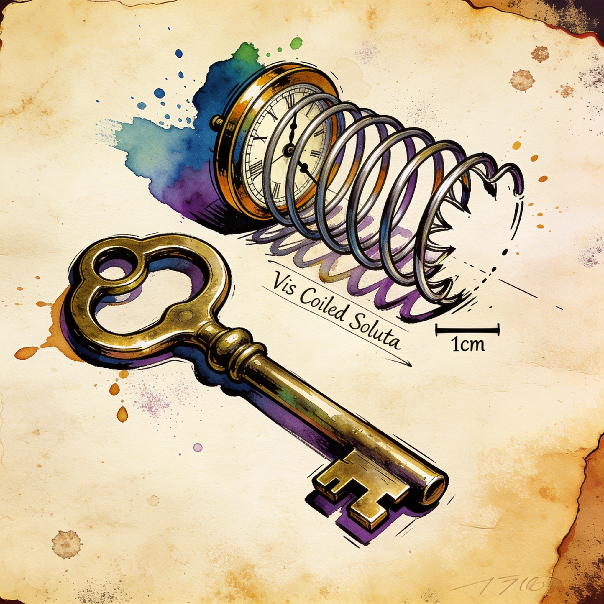

GPU performance
Open-source UEFI tool unlocks Nvidia's half-speed tensor limiter on RTX 20/30/40 cards
The nv-uefi-unlocker project boots from a USB drive before the Nvidia driver loads and removes the half-speed Tensor Core throttle on RTX 20, 30 and 40 series desktop and laptop GPUs, lifting FP16 matrix math performance by up to 65% on Windows and Linux. Blackwell RTX 50 series is not covered. It is free throughput for the huge installed base of last-gen cards powering local LLM rigs.